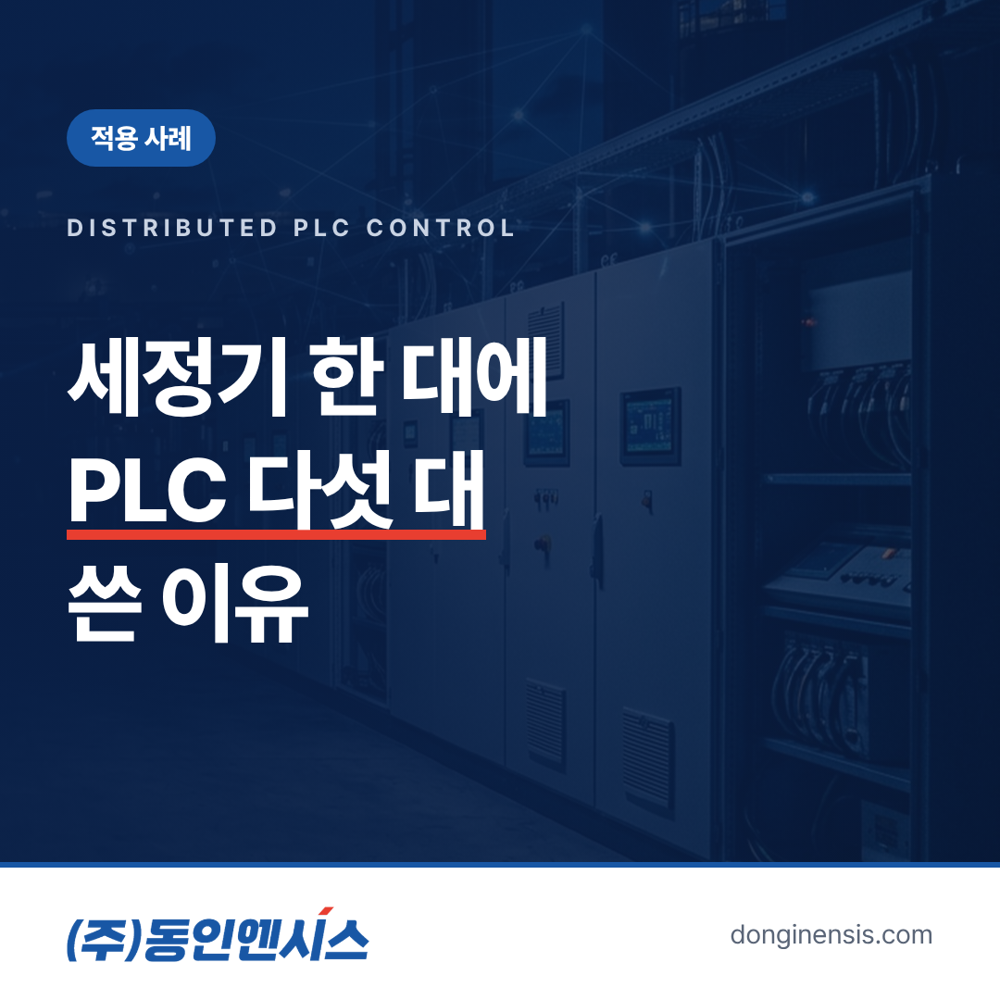
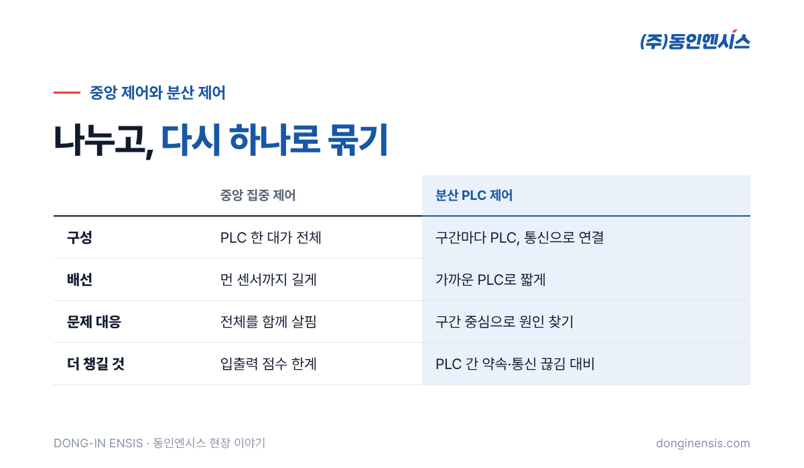
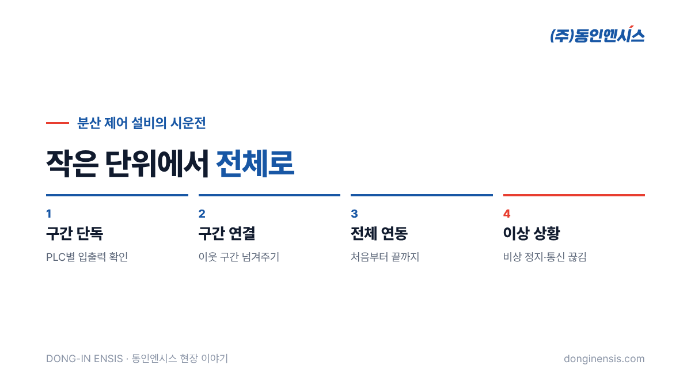

설비 하나에 PLC는 한 대. 많은 사람이 그렇게 생각합니다. 실제로 작은 설비라면 PLC 한 대가 모든 동작을 맡는 것이 가장 간단하고 관리하기도 쉽습니다. 그런데 장비가 길어지고 구간이 많아지면 이야기가 달라집니다. 1991년부터 부산에서 제어반을 설계·제작하고 PLC 프로그램까지 직접 짜 온 동인엔시스는 DMS의 고밀도 세정기에서 PLC 5대를 나눠 쓰는 분산 PLC 제어를 맡았습니다. 왜 한 대가 아니라 다섯 대였는지, 분산 제어에 대해 자주 받는 질문 일곱 가지에 답해 보겠습니다.
하나의 설비를 여러 구간으로 나누고, 구간마다 PLC를 따로 두어 각자 맡은 부분을 제어하게 하는 방식입니다. 각 PLC는 자기 구간의 센서와 모터를 다루고, PLC끼리는 통신으로 서로의 상태를 주고받으며 전체가 하나의 설비처럼 움직이게 합니다.
반대 개념은 중앙 집중 제어입니다. PLC 한 대가 설비 전체의 모든 입력과 출력을 모아 혼자 판단하는 방식입니다. 어느 쪽이 늘 낫다기보다, 설비의 크기와 구조에 따라 알맞은 방식이 달라집니다. 비유하자면 작은 가게는 사장님 한 분이 다 챙길 수 있지만, 큰 공장은 구역마다 반장을 두고 반장들끼리 소통하게 하는 것과 비슷합니다. 분산 PLC 제어에서 각 PLC가 그 구역 반장 역할을 맡습니다.

일반적으로 분산 제어를 고르는 이유는 몇 가지로 정리됩니다.
입출력 점수가 많고 구간이 뚜렷한 장비일수록 이런 장점이 커집니다. 반대로 작고 단순한 설비에 PLC를 여러 대 쓰면 통신과 관리만 늘어나니, 나누는 것이 언제나 답은 아닙니다. 설비의 크기와 구간 수를 먼저 보고, 나눌 때 얻는 것과 늘어나는 관리 부담을 함께 따져 정합니다.
물론 있습니다. PLC가 여러 대이니 서로 주고받아야 할 정보가 생기고, 그 통신을 설계하는 일이 더해집니다. 앞 구간이 끝났다는 신호를 다음 구간이 정확히 받아야 하고, 비상 정지처럼 전체가 함께 멈춰야 하는 동작은 모든 PLC가 같은 순간에 알아야 합니다.
그래서 분산 제어에서는 '각자 할 일'과 '함께 지켜야 할 규칙'을 처음부터 분명히 나누는 것이 핵심입니다. 이 경계가 흐리면 PLC를 나눈 장점이 오히려 혼란으로 바뀝니다. 또 PLC가 여러 대인 만큼 프로그램 버전을 함께 관리해야 합니다. 한 구간의 프로그램만 고치고 다른 구간과의 약속을 바꾸지 않으면, 평소에는 멀쩡하다가 특정 순간에만 어긋나는 까다로운 문제가 생기기도 합니다.
정해진 공식은 없지만, 일반적으로 아래 기준을 함께 봅니다.
DMS 고밀도 세정기에서 PLC가 다섯 대가 된 것도 이런 기준으로 장비를 나눈 결과입니다. 구간별 세부 구성은 고객사 설비 정보라 여기서는 다루지 않습니다.
Photorealistic wide photo of a long stainless steel industrial processing machine line in a clean Korean factory, divided into several enclosed sections with inspection windows, each section with its own small light-grey control box mounted on the side, conveyor visible inside, bright even lighting, no people, no brand logos, no readable text. 3:2 landscape.
분산 제어의 실력은 PLC 사이의 약속에서 드러납니다. 일반적으로 다음을 정해 둡니다.
특히 마지막 항목이 중요합니다. 통신이 끊긴 순간 각 PLC가 제멋대로 계속 움직이면 위험하므로, 신호가 끊기면 안전한 상태로 멈추도록 프로그램에 담아 둡니다. 이런 약속을 표 하나로 정리해 두면, 나중에 정비하는 사람도 구간 사이에 어떤 신호가 오가는지 한눈에 알 수 있습니다. 분산 PLC 제어에서 문서가 특히 중요한 이유입니다.
분산 제어 설비의 시운전은 작은 단위에서 큰 단위로 넓혀 갑니다.
동인엔시스는 이 과정을 공장검사와 현장 시운전에 나눠 진행합니다. PLC 프로그램을 직접 짠 엔지니어가 시운전까지 맡기 때문에, 문제가 생기면 그 자리에서 원인을 찾아 고칠 수 있습니다. 구간 사이의 신호를 누가 보냈고 누가 받았는지 프로그램을 짠 사람이 가장 잘 알기 때문입니다.

동인엔시스는 750건이 넘는 프로젝트에서 다양한 제조 설비를 제어해 왔습니다. IGis 단열 스페이서 생산설비의 서보 13축, 대한화섬 자동 도퍼의 서보 8축, 밥스트코리아 포장기계, 동화기업 수지 플랜트처럼 구조가 복잡한 설비가 많았습니다.
여러 PLC와 구간의 상태를 하나의 규칙으로 묶어 본 경험은, 지금 지능형 제어반에서 여러 설비의 데이터를 같은 형식으로 묶어 내보내는 일과 맞닿아 있습니다. 까다로운 현장에서 쌓은 제어의 질서가 데이터 인프라의 신뢰성으로 이어지는 셈입니다. 구간마다 상태를 정확히 정의하고 그 상태를 서로 믿을 수 있게 주고받는 일은, 결국 설비 데이터를 믿을 수 있게 만드는 일과 같은 뿌리를 갖고 있습니다.
Photorealistic close-up photo inside an open light-grey control cabinet showing a compact PLC with I/O modules and an industrial ethernet cable connected, a second PLC rack visible in another compartment, neat wiring ducts, small green status LEDs, soft even lighting, no brand logos, no readable text. 3:2 landscape.
분산 PLC 제어는 PLC를 많이 쓰는 기술이 아니라, 큰 설비를 잘게 나누고 다시 하나로 묶는 기술입니다. 나누는 기준과 묶는 약속이 분명할 때 설비는 더 정비하기 쉽고, 더 안전하게 움직입니다. 동인엔시스는 그 기준과 약속을 현장마다 새로 설계해 왔습니다.
제어 상담 051-862-3668 · dongin@donginmne.com
아래 질문 중 하나에 실제 경험으로 답해 본문 적당한 곳에 넣어 주세요. 사람이 직접 쓴 문장이 들어가면 네이버에서 저품질 위험이 줄고 노출에 도움이 됩니다.